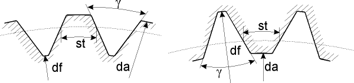

|
|
|


直线齿面
你可以选择一个直线齿面作为特殊齿形。直线齿面由分度圆上的齿厚（理论齿形）、横向剖面中的齿槽宽角、齿顶直径和齿根直径以及制造用的变位系数（取决于公差）定义。你也可以预先定义齿顶和齿根的倒圆角半径。

图15.82：直线齿面
注意
此工序不应与“自动”工序结合，除非有意为之。要禁用“自动”，右键点击“禁用”。
Straight line flank
You can select a straight line flank as a special tooth form. The straight line flank is defined by the tooth thickness at the reference circle (theoretical toothing), the space width angle in transverse section, the tip and root diameter as well as the manufacturing profile shift coefficient (dependent on the tolerance). You can also predefine radii for tip and root rounding.
Figure 15.82: Straight line flank
Note
This operation should not be combined with the "automatic" operation, if this is not intended. To deactivate "automatic", right-click "Deactivate".